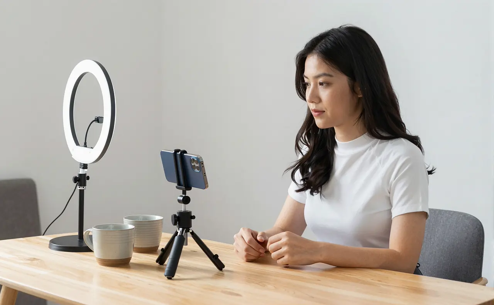
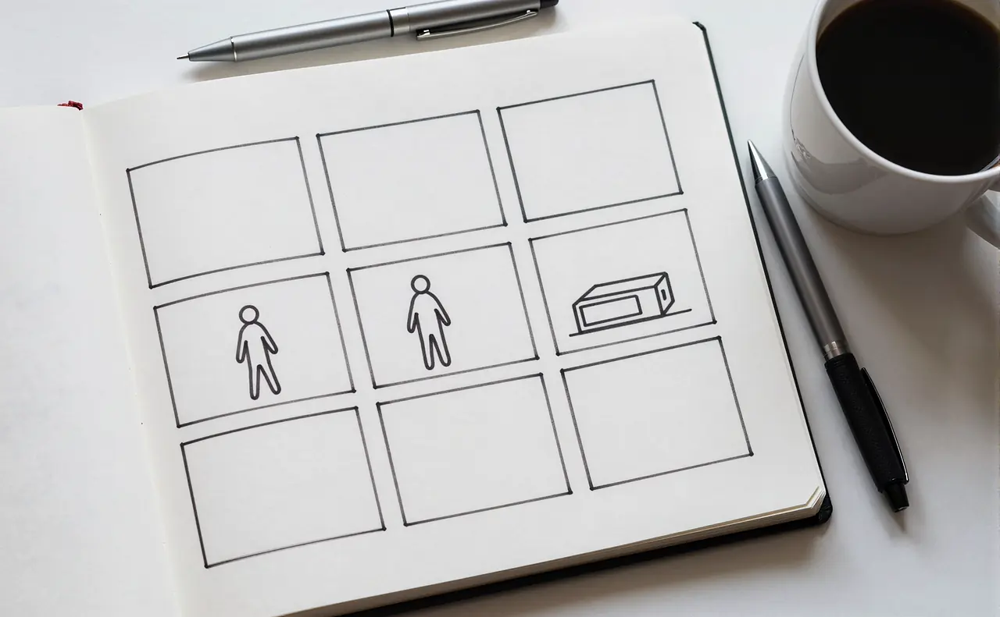

Edit Video
Cách viết kịch bản video ngắn bán hàng: hook 3 giây, cấu trúc và 5 mẫu kịch bản dùng ngay
Quay đẹp, dựng mượt mà video vẫn không ai xem hết, thường là do thiếu kịch bản: không rõ câu mở đầu, nói lan man, kết thúc không bảo người xem làm gì. Bài này hướng dẫn viết kịch bản video ngắn bán hàng từ câu hook ba giây đầu đến lời kêu gọi, kèm năm mẫu kịch bản có thể dùng ngay cho sản phẩm của bạn.

Một kịch bản video ngắn bán hàng 15 đến 60 giây thường có bốn phần: hook trong ba giây đầu để người xem dừng lướt, phần thân nêu vấn đề và cho thấy sản phẩm giải quyết thế nào, bằng chứng thật, và một lời kêu gọi duy nhất ở cuối. Kịch bản nên viết thành hai cột: cột hình (cảnh quay, góc máy, chữ trên màn hình) và cột lời (câu nói hoặc lời dẫn), mỗi dòng ứng với vài giây. Viết trước khi quay giúp bạn quay đủ cảnh, nói gọn ý và dễ làm nhiều phiên bản hook để thử.
Bài edit video TikTok, Reels bán hàng đã nói về các kiểu mở đầu, cách quay điện thoại và nhịp dựng. Bài này đi sâu vào phần viết: cách dựng câu hook, khung kịch bản, năm mẫu theo tình huống và cách viết theo lô.
Vì sao video ngắn cần kịch bản
Video ngắn trông tự nhiên, ngẫu hứng, nhưng nhiều video bán hàng giữ được người xem đến cuối đều có kịch bản, dù chỉ là năm dòng ghi trên điện thoại. Kịch bản giúp:
- Giữ một ý duy nhất: video 30 giây chỉ đủ chỗ cho một vấn đề, một lợi ích chính.
- Quay đủ cảnh: biết trước cần cận cảnh nào, cảnh dùng thật nào, đỡ phải quay lại.
- Nói gọn: câu được viết và đọc thử trước luôn ngắn hơn câu nghĩ ra lúc bấm quay.
- Làm nhiều phiên bản: cùng phần thân, thay ba câu hook khác nhau để thử xem câu nào giữ người xem tốt hơn.
Viết hook 3 giây: ba lớp cùng lúc
Ba giây đầu là lúc người xem quyết định dừng hay lướt tiếp. Một hook tốt thường có ba lớp xuất hiện cùng lúc, mỗi lớp bổ trợ lớp kia:
- Lớp hình: khung hình đầu tiên phải có chuyển động hoặc điều bất ngờ: sản phẩm đang được dùng, kết quả trước sau, một hành động gây tò mò. Tránh mở bằng logo, cảnh tĩnh, hay người nói "xin chào mọi người".
- Lớp chữ: một dòng chữ lớn trên màn hình nói thẳng chủ đề, vì nhiều người xem khi tắt tiếng.
- Lớp lời: câu nói đầu tiên vào thẳng vấn đề hoặc lời hứa, không rào đón.
Một số công thức hook dễ dùng
- Gọi đúng người: "Ai da dầu, trang điểm hay bị bí da thì xem cái này."
- Nói thẳng điều khách sợ: "Mua nồi chiên mà không để ý điểm này là phí tiền."
- Kết quả trước, cách làm sau: cho thấy bàn bếp sạch bóng, rồi mới quay lại lúc còn dầu mỡ.
- Trả lời câu hỏi thật: "Nhiều bạn hỏi bình này giữ đá được bao lâu, mình thử luôn."
- Đảo ngược kỳ vọng: "Đừng mua áo khoác này nếu bạn chỉ đi trong thành phố."
Hook phải đúng với nội dung phía sau. Câu mở đầu giật gân nhưng phần thân không liên quan làm người xem thấy bị lừa, và có thể vi phạm chính sách quảng cáo của nền tảng.
Khung kịch bản hai cột
Viết kịch bản thành bảng, mỗi dòng là một đoạn vài giây. Cột trái mô tả hình và chữ trên màn hình, cột phải là lời nói. Khung này đủ để người quay, người dựng và người nói cùng hiểu.
| Giây | Hình và chữ trên màn hình | Lời nói |
|---|---|---|
| 0–3 | Cận cảnh đổ đá vào bình, chữ: "Đá còn sau 1 ngày?" | "Bình này mình đổ đá từ sáng hôm qua, giờ mở ra xem." |
| 3–8 | Mở nắp, lắc bình nghe tiếng đá | "Vẫn còn đá. Đi làm cả ngày không cần mua nước." |
| 8–16 | Cận nắp, vòng đệm, thân bình; chữ: dung tích | "Nắp có vòng đệm nên úp ngược không rỉ, thân thép không gỉ, cầm không bị đọng nước." |
| 16–24 | Cảnh bỏ bình vào túi xách, để trên bàn làm việc | "Vừa túi xách, vừa ngăn đựng nước của balo." |
| 24–30 | Ba màu bình xếp cạnh nhau, chữ: "Bấm giỏ hàng" | "Có ba màu, bấm giỏ hàng góc trái để chọn màu nhé." |
Ví dụ trên chỉ để minh họa cách viết. Mọi con số và công dụng nói trong video phải đúng với sản phẩm thật và đã được bạn kiểm tra.

5 mẫu kịch bản video ngắn bán hàng
Mẫu 1: Vấn đề, giải pháp, bằng chứng
Hợp với sản phẩm giải quyết một khó chịu cụ thể. Hook: nêu vấn đề bằng hình. Thân: sản phẩm xuất hiện và được dùng thật. Bằng chứng: kết quả sau khi dùng, nói đúng mức. Kết: một lời kêu gọi. Ví dụ minh họa: miếng lót chống trượt cho thảm, mở bằng cảnh thảm bị xô lệch khi bước qua.
Mẫu 2: Trả lời một câu hỏi của khách
Lấy câu hỏi thật trong bình luận hoặc tin nhắn, đặt thành chữ to ở khung đầu. Trả lời bằng cách cho xem, không chỉ nói. Kết bằng mời khách hỏi thêm. Mẫu này dễ làm hằng ngày, vì khách luôn có câu hỏi mới, và người xem thấy shop đang thật sự trả lời họ.
Mẫu 3: Ba lý do hoặc ba lỗi
"Ba lý do mình chọn loại vải này", "Ba lỗi khi chọn kem chống nắng". Mỗi ý vài giây, có số thứ tự hiện trên màn hình để người xem biết còn bao nhiêu ý. Ý mạnh nhất để cuối, sản phẩm xuất hiện như lời giải tự nhiên chứ không chen vào đầu.
Mẫu 4: So sánh trước và sau, cũ và mới
Chia đôi khung hình hoặc cắt nhanh giữa hai trạng thái: cách làm cũ và khi có sản phẩm. Phù hợp đồ gia dụng, dụng cụ, dịch vụ vệ sinh, sửa chữa. So sánh với cách làm thông thường an toàn hơn so trực tiếp với thương hiệu khác. Với mỹ phẩm, thực phẩm bảo vệ sức khỏe và dịch vụ y tế, hình ảnh trước sau và lời nói về công dụng có quy định riêng, hãy kiểm tra trước khi đăng.
Mẫu 5: Hậu trường và câu chuyện
Quay quá trình làm ra sản phẩm, đóng gói đơn hàng, chọn nguyên liệu. Hợp với hàng thủ công, đặc sản, đồ ăn. Lời nói kể chuyện ngắn: vì sao làm, làm thế nào, điều gì khác. Mẫu này ít bán trực tiếp nhưng tạo niềm tin, giúp các video bán hàng sau dễ chốt hơn.
Viết lời kêu gọi cuối video
Mỗi video chỉ nên có một việc cho người xem làm: bấm giỏ hàng, nhắn tin, bình luận một từ khóa để nhận báo giá, ghé cửa hàng. Nhiều lời kêu gọi cùng lúc khiến người xem không làm gì cả. Hãy nói lời kêu gọi bằng lời, đặt thành chữ trên màn hình và ghi lại trong phần mô tả video. Lời kêu gọi nên tự nhiên với mẫu kịch bản: video trả lời câu hỏi thì mời hỏi thêm, video so sánh thì mời bấm xem sản phẩm.
Viết kịch bản theo lô
Đăng đều mỗi ngày dễ hơn nhiều khi bạn viết và quay theo lô. Một cách làm gọn:
- Gom 20 đến 30 câu hỏi, lời khen, lời phàn nàn thật của khách từ tin nhắn và bình luận.
- Gán mỗi câu vào một trong năm mẫu ở trên.
- Viết mỗi kịch bản năm, sáu dòng theo khung hai cột, kèm hai ba câu hook thay thế.
- Gom các cảnh giống nhau để quay cùng lúc: tất cả cận cảnh sản phẩm, tất cả cảnh nói trước máy.
- Dựng một video gốc cho mỗi kịch bản, rồi ghép các câu hook khác nhau thành phiên bản thử.
Nếu bạn tự dựng bằng CapCut hay thuê người dựng, kịch bản theo lô cũng giúp ước lượng khối lượng việc và chi phí rõ hơn; xem bài tự edit video bằng CapCut hay thuê editor.
Đọc số liệu để sửa kịch bản
TikTok, Facebook và YouTube đều cho xem thời gian xem trung bình và biểu đồ giữ chân người xem trong phần phân tích của từng video. Đừng chỉ nhìn lượt xem. Hãy xem người xem rời đi ở giây thứ mấy: rời ngay trong vài giây đầu thì hook chưa đủ mạnh hoặc không đúng người; rời giữa video thì phần thân dài hoặc lan man; xem hết nhưng không ai bấm thì lời kêu gọi chưa rõ. Mỗi lần chỉ thay một yếu tố, như câu hook, để biết thay đổi nào có tác dụng.
Lỗi thường gặp khi viết kịch bản
- Chào hỏi, giới thiệu shop ở đầu video: người xem chưa biết vì sao nên ở lại.
- Nhồi nhiều ý: năm công dụng, ba ưu đãi trong 30 giây, không ý nào đọng lại.
- Hook không khớp nội dung: mở bằng câu giật gân rồi nói chuyện khác.
- Viết như văn quảng cáo: "sản phẩm chất lượng cao, giá cả hợp lý" nghe giống mọi video khác. Hãy viết như đang nói với một người khách.
- Hứa quá mức: công dụng tuyệt đối, cam kết không có thật, dễ bị nền tảng hạn chế và mất lòng tin.
- Không có lời kêu gọi, hoặc có quá nhiều lời kêu gọi cùng lúc.
- Dùng nhạc đang thịnh hành cho video quảng cáo mà không kiểm tra quyền dùng thương mại trên nền tảng đó.
Chi phí dựng video ngắn bán hàng tại Dream Labs
Nếu bạn đã có kịch bản và cảnh quay, gói Cơ bản 800.000đ/video dựng video ngắn đến 60 giây có cắt ghép, nhạc nền, phụ đề, chỉnh màu cơ bản. Gói Chuyên nghiệp 2.000.000đ/video thêm phụ đề động, motion text, color grading và xuất 3 tỷ lệ 9:16, 1:1, 16:9 cho TikTok, Reels và YouTube. Gói Cao cấp 5.000.000đ/video có kịch bản dựng, sound design và bộ 5 clip cắt ngắn đi kèm, hợp khi bạn cần nội dung cho cả một chiến dịch. Sản phẩm khó quay có thể làm bằng motion graphic, gói Chuyên nghiệp 5.000.000đ/3 video gồm kịch bản, storyboard và lồng tiếng AI.
| Gói | Giá | Thời gian | Bao gồm |
|---|---|---|---|
| Cơ bản | 800.000đ/video | 2 ngày4 vòng sửa | Video gọn gàng, có phụ đề để đăng đều đặn mà không mất thời gian tự dựng.
|
| Chuyên nghiệpPhổ biến nhất | 2.000.000đ/video | 3–4 ngày9 vòng sửa | Video giữ người xem tới cuối, dựng một lần dùng được cho TikTok, Reels và YouTube.
|
| Cao cấp | 5.000.000đ/video | 5–7 ngày18 vòng sửa | Video quảng cáo chỉn chu kèm 5 clip ngắn: đủ nội dung cho cả một chiến dịch.
|
Xem trang edit video TikTok, Reels, trang dịch vụ edit video và bảng giá. Gửi sản phẩm và cảnh quay đang có qua Zalo 0934 246 420 để được gợi ý hướng kịch bản.
Câu hỏi thường gặp
Hook 3 giây là gì?
Là phần mở đầu của video ngắn, gồm khung hình, dòng chữ và câu nói đầu tiên, có nhiệm vụ khiến người đang lướt dừng lại. Hook tốt vào thẳng vấn đề hoặc kết quả, không chào hỏi rào đón.
Video ngắn bán hàng nên dài bao nhiêu giây?
Thường 15 đến 60 giây; một ý đơn giản chỉ cần khoảng 20 đến 30 giây. Sản phẩm cần giải thích nhiều có thể dài hơn, miễn là mỗi đoạn đều có lý do để người xem ở lại.
Có cần viết kịch bản cho video nói tự nhiên không?
Nên có ít nhất dàn ý: câu hook, ba ý chính, lời kêu gọi. Bạn không cần đọc thuộc lòng, nhưng có dàn ý giúp nói gọn và không quên cảnh cần quay.
Một kịch bản dùng được cho cả TikTok, Reels và Shorts không?
Được, vì cả ba đều là video dọc ngắn. Có thể chỉnh lời kêu gọi theo từng nền tảng, như bấm giỏ hàng trên TikTok Shop hay nhắn tin trên Facebook.
Làm sao biết hook nào tốt hơn?
Dựng cùng phần thân với hai ba câu hook khác nhau, đăng hoặc chạy thử, rồi so tỷ lệ người xem ở lại sau vài giây đầu trong phần phân tích video.
Viết kịch bản bằng AI có được không?
AI giúp gợi ý ý tưởng và câu hook nhanh, nhưng bạn cần sửa lại theo cách nói của khách thật và kiểm tra mọi thông tin về sản phẩm. Kịch bản AI để nguyên thường nghe chung chung.
Dream Labs có viết kịch bản video ngắn không?
Gói edit video Cao cấp 5.000.000đ/video có kịch bản dựng, tức sắp cảnh, nhịp và lời từ cảnh quay bạn gửi; gói motion graphic Chuyên nghiệp 5.000.000đ/3 video có kịch bản và storyboard. Gói Cơ bản và Chuyên nghiệp của edit video dựng theo kịch bản bạn có sẵn. Viết riêng cả loạt kịch bản quay trước khi quay được báo giá theo phạm vi, hãy nhắn Zalo để trao đổi.
Nguồn ảnh: ảnh minh họa do Dream Labs tạo bằng AI (ComfyUI · Z-Image Turbo), không phải ảnh chụp khách hàng hay dự án thật.
Bắt đầu cùng Dream Labs
Muốn có bộ kịch bản video cho sản phẩm của bạn?
Nhắn Zalo cho Dream Labs sản phẩm, kênh đăng và cảnh quay đang có. Chúng tôi gợi ý hướng kịch bản và báo giá dựng theo gói.